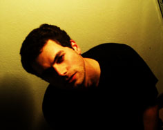

MASSIMILIANO OSINI
plays vocals, guitar in Dana Plato.
Born in Mantova, Italy on October 14, 1973.
Formed and splitted The Massey Fergusson Ensemble
before getting into Dana Plato in 2001.
"What thou lov'st well is thy true heritage."
(E. Pound) |
Fav music: Hüsker Dü, early Zappa, Velvet Underground, Dead C, Royal Trux, Gainsbourg, Barrett
Fav movies: Pulp Fiction, The Good the Bad and the Ugly, Full Metal Jacket, 8 e ½ , Manhattan.
Fav novels: Eco’s Il pendolo di Foucault, Lodge’s Small World, Kafka’s Amerika, Bernhard’s Vestörung, Perec’s La vie mode d’emploi.
Fav TV programme: Blob, Fuori orario, The Dukes of Hazzard, Tiger Mask, Daitarn III.
Fav actress: Claudia Cardinale, Diane Keaton, Melanie Griffith, Juliette Lewis, Patricia Arquette.
Fav actor: Clint Eastwood, Marcello Mastroianni, Johnny Depp, Steve Buscemi, Harvey Keitel.
Fav colour: Blue, black & white
Drink: Guinness, Tea, Jägermeister, Gin, White Russian.
Fav food: Nutella, my grandma’s tortelli, parmigiano reggiano, dönner kebab, huge salad.
Likes: Tex Willer, Pantani à l’Alpe d’Huez, being alone, Blow Up (the magazine), cats, walking in the fog, writing letters, Tetris, Pollock’s dripping, winter season.
Dislikes: mobile phones, shaving, children, Italian bureaucracy, discotheques, the Bush family, hypocrisy, egoism, four stars hotels, Volkswagen Golf. |